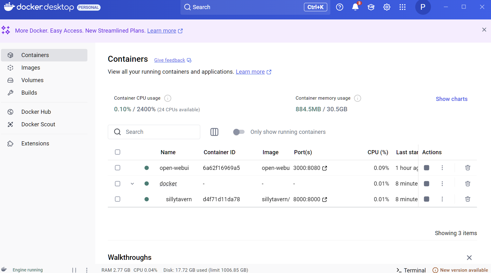
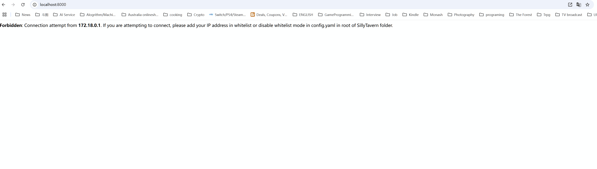
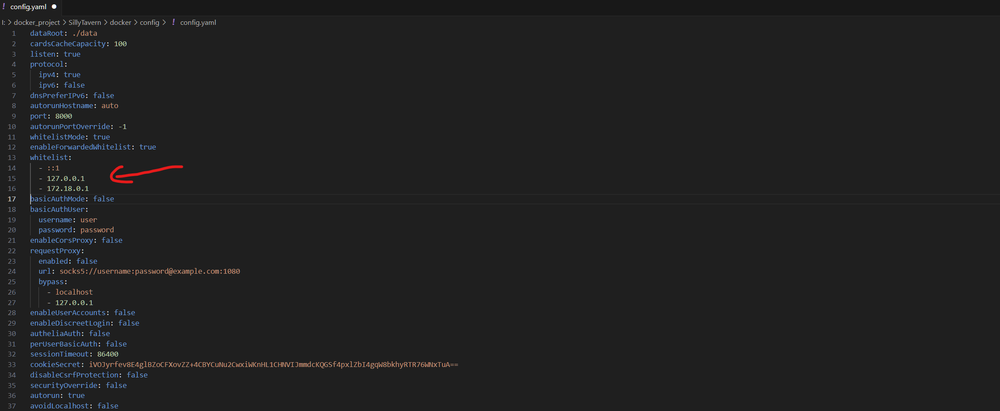
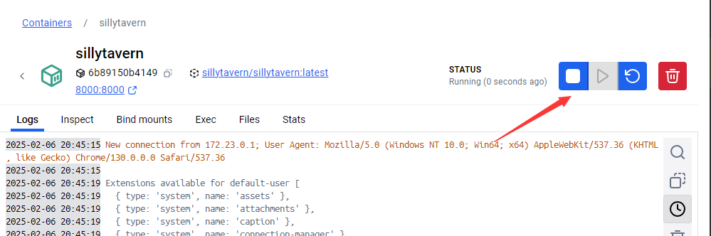
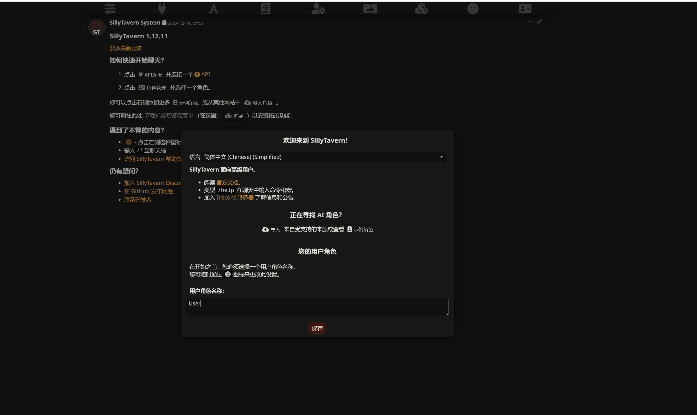

SillyTavern 酒馆一键部署教程 - 零基础超友好版本，按一下就能安装！ 🎮
这是专门为编程小白准备的超简单部署教程，只需双击两个文件就能完成安装。如果你想了解更多技术细节或需要自定义配置，可以查看进阶版教程~
开始前的小叮嘱
- 本教程只需要会双击鼠标就行啦，完全不需要敲命令！
- 记得全程开着 VPN（除非你已经在墙外啦），不然可能会卡在半路哦！
- 这个版本支持同时运行多个酒馆，每个都可以用不同的端口~
- Windows 专用版本，Mac 用户请等待后续更新~
为什么要用这个版本？🤔
原来的安装方法虽然也不难，不过对于完全没接触过编程的朋友们来说还是有点门槛。所以我们做了这个超级简单的版本：
- 双击就能安装，不用碰命令行！
- 自动完成所有配置，不用担心设置错误
- 支持同时运行多个酒馆（想开几个开几个~）
- 更新也是双击一下就搞定，还会自动帮你备份
准备工作 🛠️
0. 安装 WSL2（Windows必需） 🐧
-
访问 微软官方指南
-
使用自动安装方法（简单推荐）：
- 右键开始菜单 -> 以管理员身份运行 PowerShell
- 输入命令并回车：
- 等待安装完成后重启电脑
- 重启后等 Ubuntu 自动安装完成即可
如果自动安装失败，请使用手动安装：(如果第2步成功无视这一步)
- 以管理员身份运行 PowerShell
- 输入下面两条命令：
- 重启电脑
- 下载 WSL2 Linux 内核更新包
- 安装下载的更新包
- 再次打开管理员 PowerShell，输入：
安装提示
- 需要 Windows 10 版本 2004 及以上（Win+R 运行 winver 可查看）
- 全程记得开启 VPN，不然下载很慢
- 如果安装不顺利，先把 Windows 更新到最新版本
安装 WSL2 成功后，我们就可以开始安装 Docker Desktop 啦！
1. 安装 Docker Desktop
-
点击大大的蓝色下载按钮

-
等下载完成后双击安装包，一路点"下一步"就行啦
-
安装完成后重启电脑
-
重启后会看到 Docker Desktop 自动启动

2. 安装 Git
-
访问 Git 下载页面
-
点击下载按钮（Windows 版本）

-
下载完成后双击安装，一路点"下一步"
3. 下载安装脚本
从这里下载我们的一键安装脚本： 下载点我！
重要提示
- install_sillytavern.bat 放在你想安装酒馆的文件夹里
- update_sillytavern.bat 要放在同一个文件夹并且以后不要移动它，因为它需要知道酒馆安装在哪里才能更新
比如你可以这样组织文件：
E:\MySillyTavern\
├── install_sillytavern.bat
├── update_sillytavern.bat
└── SillyTavern\ 【这个文件夹是安装后自动创建的】
开始安装 🚀
-
新建一个文件夹（放哪里都行）
-
把下载好的两个脚本放进去
-
双击 install_sillytavern.bat
-
根据提示输入：
- 想用的端口号（建议 3000-9000 之间，不知道的话直接回车用默认的 8000）
- 酒馆名字（起个好记的，比如 tavern1，不知道的话直接回车用默认的）

-
等待安装完成，看到成功提示就可以了！
-
这时候你应该可以在docker看到一个名字为你输入名字的容器，这就是你的酒馆啦！

-
现在需要添加允许访问的IP：
- 先用浏览器访问
http://localhost:8000/ - 你会看到一个报错页面，里面会显示需要添加的IP地址 
- 回到安装文件夹，进入 docker/config 目录
- 找到 config.yaml 文件并打开 
- 在 whitelist 下面添加以下IP：
这些IP是什么？
- 这些是本地访问需要用到的IP地址：
::1和127.0.0.1是本机地址172.18.0.1是Docker内网地址- 如果报错页面显示了其他IP，也要一起加进去哦~
- 先用浏览器访问
-
修改完配置文件后,重启容器让配置生效:
- 回到 Docker Desktop
- 找到你的酒馆容器
- 点击右边的重启按钮(两个循环箭头的图标)或右键选择"Restart"
- 等待容器重启完成 
-
大功告成！🎉 现在再次访问
http://localhost:xxx/就能看到你的专属酒馆啦！xxxx为你设定的端口号
多开说明 🎮
想开多个酒馆？简单！
- 复制一份 install_sillytavern.bat 到新文件夹
- 双击运行，输入不同的端口号和名字
- 搞定！可以同时运行多个不同版本啦
更新方法 🔄
- 双击 update_sillytavern.bat
- 确认更新即可
- 脚本会自动帮你备份，很安全哦！
注意事项 ⚠️
- 端口号要记得用不同的，不然会冲突
- 更新之前记得看看备份文件在哪里（脚本会告诉你）
- 如果之前安装过其他版本的酒馆，建议先卸载掉
最后的小贴士 💡
-
如果要用 SD、ComfyUI 或 Ollama 之类的本地服务，记得把地址改一下：
- 原来的
http://127.0.0.1:xxxx - 改成
http://host.docker.internal:xxxxxxxx 是端口号， 为啥要改？因为我们的酒馆在 Docker 小房子里，要用特殊的方式才能和外面联系啦~
- 原来的
-
你的所有重要文件（角色卡、世界书、插件等）都在
SillyTavern\docker文件夹里，更新前记得备份哦！
常见问题 ❓
Q: 怎么访问安装好的酒馆？
打开浏览器，输入
http://localhost:你选的端口号
Q: 安装失败怎么办？
- 检查 VPN 是否开着
- 检查 Docker Desktop 是否正常运行
- 重启电脑试试看
Q: 想删掉重来怎么办？
直接在 Docker Desktop 里删掉容器，然后重新运行安装脚本就好啦
好啦！现在你已经拥有了自己的小酒馆，开始愉快地玩耍吧！🎊 有问题随时问我哦~ 😊